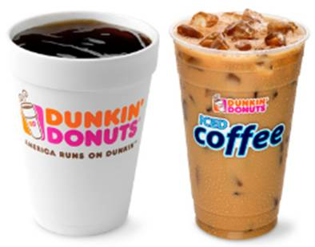

The Ins and Outs of ALLIE
Home
Résumé
Interests/Hobbies
Networks
LinkedIn
Twitter
Facebook
Google+
Email
|
WHAT I DO WITH MY LIFE
- Dunkin' Donuts: This is one of my
favorite pastimes. I like to consider myself somewhat of a coffee
connoisseur. After all, coffee is happiness.
- Ugly Betty and Desperate Housewives: These are two of my favorite
shows. I have invested countless hours in keeping up with the fictional
characters of these shows.
- Going to museums: I frequent the Levine Museum and the Mint Museum
uptown. Their exhibits always intrigue me, and sometimes I get extra
credit for class by attending!
- Exploring: I enjoy taking long walks around the
uptown area, as well as taking drives when I am bored and tired of being
confined to my house.
 |